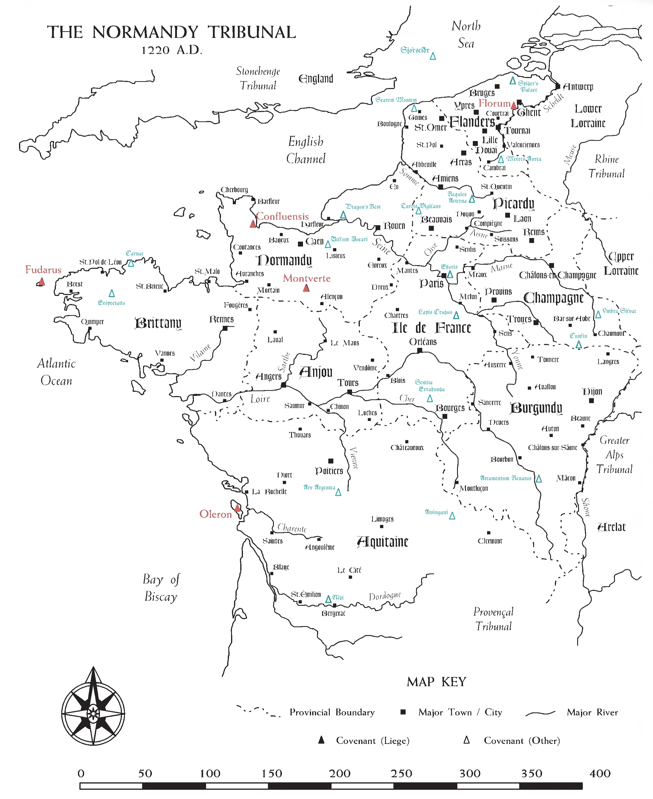

A ship-based Covenant of the North Sea
Sjórseiðr
Normandy Tribunal · A.D. 1223

The covenant archive — the chronicle of a wandering fleet, the records and standings of the Normandy Tribunal, the covenant's own sheet and crew, a reference library, and the Storyteller's working papers.
The story so far, and where the ships have sailed.
Chronicle of Events
The covenant's full story timeline — verified history and proposed drafts awaiting review, season by season.
HistoryFleet Voyages by Season
A time-series map over the Mythic Europe chart — track each ship and magus season by season, with vis harvests and Tribunal covenants.
Voyage MapThe covenant itself, and who crews its ships.
Covenant Sheet
Founding, tribunal standing, aegis, loyalty, finances, and covenant-wide virtues & flaws.
Covenant SheetFleet & Crew
Who's aboard which ship, by story period — click a name for a quick character card.
Fleet & CrewDramatis Personae
Foreign magi, dragons, faeries, and spirits who move through the story but don't crew a ship — click for full sheets.
Dramatis PersonaeXP & Season Tracker
Every member's season-by-season activity and XP — filterable by type and by ship.
XP TrackerCovenant Ledger
The covenant's true complexity over time — ships & labs, inhabitants, library, vis, and economics, with a running change log.
LedgerThe 1223 Tribunal — its covenants, its tournament, and its prizes.
The Normandy Tribunal — 1223
Interactive map of the Tribunal's covenants, with a toggle between covenant profiles and the tournament standings.
Map & StandingsTribunal Workbook — 1223
Editable scoring workbook — vis sources, library prizes, and tournament brackets, loaded live from the data file.
WorkbookVis Sources & Library
Reference catalogue of the Tribunal's known vis sources and library holdings.
ReferenceWider lore and rules — beyond the covenant's own waters.
The Contested Isle: The Hibernian Tribunal
Extracted reference data for the Hibernian Tribunal — overview and regional maps for Connacht, Leinster, Meath, Munster, and Ulster.
Hibernia ReferenceReference
Miscellaneous GM tables — North Sea and Baltic sailing times between major ports.
Sailing TablesIntegrating a New Magic System
GM rules reference — the Original Research → Breakthrough → Integration track for folding folk magic into Hermetic theory.
Rules ReferenceBuild characters, and the rules data that feeds the archive.
Character Creator
Guided Ars Magica character creation — magi, companions, and grogs — with rules and text drawn live from the armdef 0.5 corpus.
ChargenArs Magica Rule Set — .ttrpg
The full merged Ars Magica 5e rules definition (armdef 0.5) — every core book composed into a single titterpig .ttrpg by the synthesist, the source that feeds the archive's rollable crew sheets and verbatim rules text.
Rules Data · DownloadThe Storyteller's working papers — spoilers within; for the Game Master's eyes.